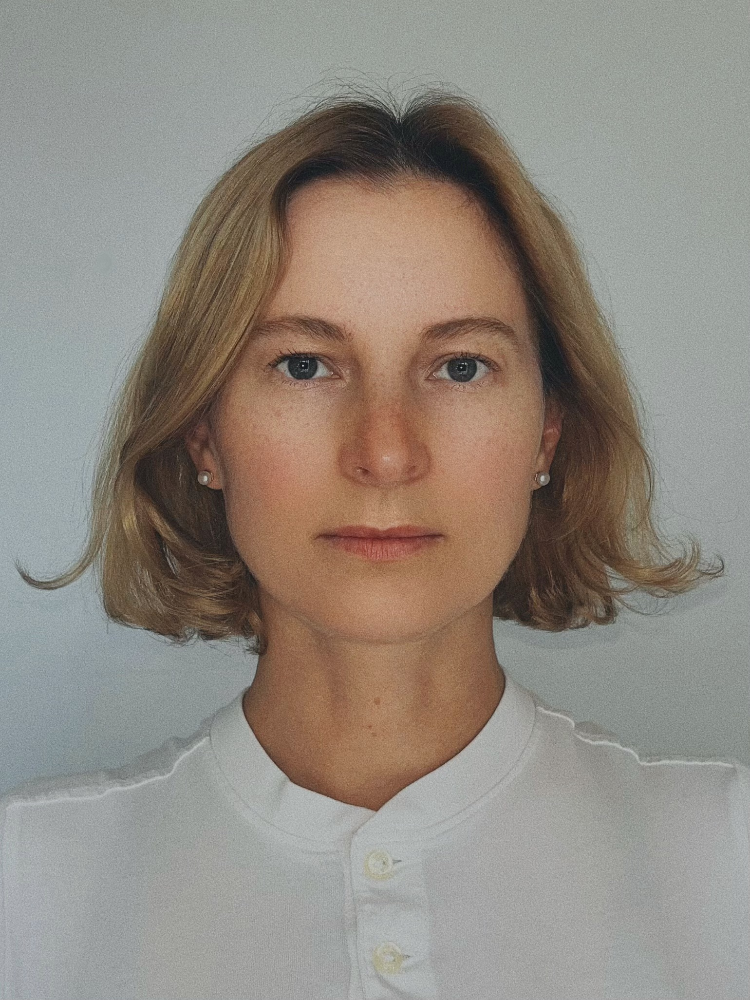

My work explores emotional restraint and psychological tension within controlled, polished surfaces. I paint faces not as psychological portraits, but as constructed systems — where meaning is carried through minimal shifts in gaze, gesture, and form.
I am influenced by icon painting and early Flemish and Renaissance portraiture, particularly their ability to compress emotion into stillness. I work with oil and sfumato to build images through softness, layering, and concealment.
I am interested in how little needs to change within a controlled system for something to break through — not rupture, but a single displaced detail that opens the whole structure to feeling.

2026
The Other Cheek — on view, Half Gallery, New York, NY
Serene Hush — acquired by private collector, placed through Half Gallery, New York, NY.
Group Exhibition, Pacific Art League, Palo Alto, California
2025
Group Exhibition, Pacific Art League, Palo Alto, California
Group Exhibition, Kate Oh Gallery, New York, NY
MA, Aerospace Engineering — Moscow Aviation Institute
Continuing Studies, Discovering the San Francisco Contemporary Art Market — Stanford University
2025 Interview with Noah Becker, editor-in-chief of 'Whitehot Magazine'
2025 MEER Magazine: "Endless Knot" Review